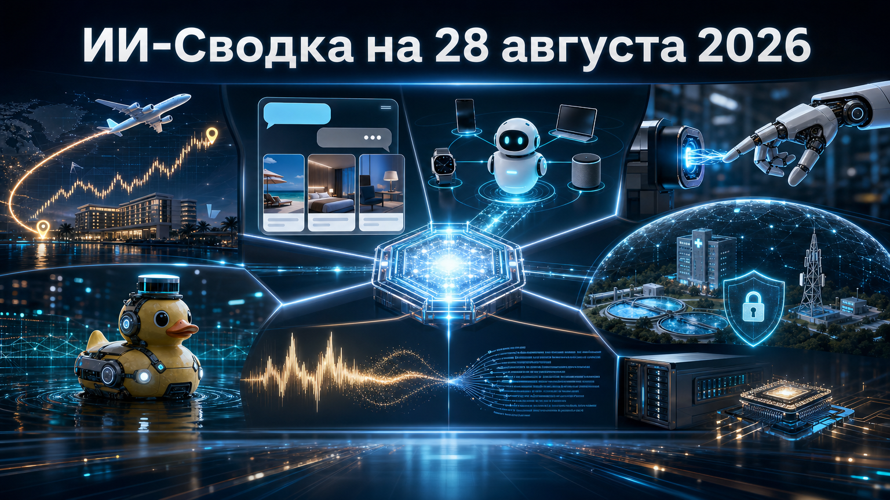

Конкуренция в потребительском ИИ всё заметнее переходит от ответов к действиям и транзакциям: Google расширяет AI Mode для путешествий, а OpenAI строит рекламный бизнес ChatGPT в Индии. Одновременно рынок укрепляет физический слой агентов — от стандартов управления устройствами и доступных роботов до серверных систем NVIDIA Vera.
В повестке также крупный раунд Instinct, совместный призыв индустрии к киберзащите и новая речевая модель Gemini. Общий сигнал дня: ценность ИИ всё чаще определяется не только возможностями модели, но и тем, как она подключается к сервисам, оборудованию и коммерческим сценариям.
Google добавила в AI Mode отслеживание стоимости выбранных перелётов с уведомлениями по электронной почте, а также поиск вариантов оплаты милями и баллами. По данным TechCrunch, функция отслеживания доступна более чем в 180 странах.
Компания также начала развёртывать в США на английском языке бронирование отелей через партнёров, включая Booking.com, Expedia, Hilton и Marriott. Это продуктовый запуск, а не независимая оценка качества сервиса: полнота доступа будет зависеть от региона, партнёра и стадии развёртывания. Однако для рынка это заметный шаг от ИИ-поиска и планирования к выполнению части транзакции.
OpenAI объявила, что начнёт показывать рекламу пользователям бесплатного ChatGPT и недорогого тарифа Go в Индии. Как сообщает TechCrunch, на старте в программе участвуют 50 брендов, а партнёрами названы WPP и Omnicom.
Компания также планирует открыть рекламный кабинет для маркетологов в следующем месяце. Это региональный запуск, а не изменение для всей аудитории ChatGPT, но он важен как проверка рекламной модели на одном из крупнейших рынков сервиса. Для пользователей ключевым станет баланс между бесплатным доступом и изменением привычного опыта общения с ассистентом.
Потребительский агент ИИ Instinct сообщил о раунде Series B на $250 млн. По данным TechCrunch, совокупное финансирование компании достигло $350 млн, оценка — $2,5 млрд, а раунд совместно возглавили Index Ventures и Benchmark.
Instinct находится в закрытой бете и позиционируется как ассистент, который подключается к приложениям и устройствам пользователя и получает поручения через сообщения и звонки. Высокая оценка показывает интерес инвесторов к агентам, способным выполнять действия, а не только отвечать в чате. При этом практические возможности продукта и безопасность его широких разрешений остаются важными ограничениями: ранее вокруг сервиса уже возникали вопросы о конфиденциальности.
По сообщению Ars Technica, Anthropic представила стандартизированный драйверный интерфейс, который должен дать агентам ИИ единый способ взаимодействовать с устройствами, а оборудованию — с ИИ-системами.
Если такой подход получит поддержку разработчиков и производителей, он может стать промежуточным слоем между программными агентами и physical AI: роботами, периферией, датчиками и исполнительными устройствами. В доступном описании пока не раскрыты спецификация, лицензия, список совместимых устройств и партнёров, поэтому масштаб будущего внедрения оценивать рано.
OpenAI, Anthropic, Google, Microsoft, CrowdStrike, Okta, Fortinet и другие компании подписали открытое письмо о необходимости совместной защиты от киберугроз, усиленных ИИ. Как пишет TechCrunch, обращение призывает к координации между частным сектором и властями разных уровней.
Авторы связывают риски с критической инфраструктурой — в том числе больницами, водоочисткой и интернет-сетями. Инициатива добровольная и не создаёт обязательных правил или единого механизма реагирования. Но широкий состав подписантов показывает, что защита от атак с применением ИИ становится общей задачей разработчиков моделей, операторов инфраструктуры и киберкомпаний.
Hugging Face и Pollen Robotics представили Microduck — 25-сантиметрового open-source робота стоимостью $399. По данным TechCrunch, устройство оснащено камерой, lidar и двумя инерциальными датчиками; разработчики могут обучать поведения в симуляции, переносить их на робота и дообучать на устройстве.
Pollen Robotics заявляет о доступности SDK, симулятора и полного стека обучения с подкреплением. Microduck должен начать поставляться до Рождества, поэтому независимых испытаний его возможностей пока нет. Тем не менее низкая цена и открытый стек могут снизить порог входа для экспериментов с робототехникой и переносом политик управления из симуляции в физический мир.
NVIDIA сообщила о начале поставок первых систем с CPU Vera — процессором, который компания позиционирует для агентных нагрузок. В официальном сообщении NVIDIA говорится, что первые системы переданы Anthropic, OpenAI, Oracle Cloud Infrastructure и SpaceXAI.
Для NVIDIA это переход от анонса платформы к первым производственным поставкам ключевым заказчикам. Сообщение компании не содержит независимых тестов производительности, объёмов поставок или деталей коммерческих контрактов. Однако появление нового серверного CPU у крупных пользователей подчёркивает, что инфраструктура агентов требует оптимизации не только ускорителей, но и всей вычислительной системы.
Google представила Gemini 3.5 Transcribe — модель преобразования речи в текст с поддержкой более 85 языков, разметкой до трёх говорящих и обработкой слов-паразитов и самокоррекций. Согласно карточке релиза HuggingNews, модель доступна через Gemini API и Google AI Studio.
В материалах запуска заявлены показатели WER 2,6% для обычного режима и 4% для потокового, но это показатели самого релиза, а не независимый бенчмарк. Модель важна для голосовых агентов, протоколирования встреч и приложений реального времени: такие продукты зависят не только от качества LLM, но и от точного, быстрого и многоязычного восприятия речи.